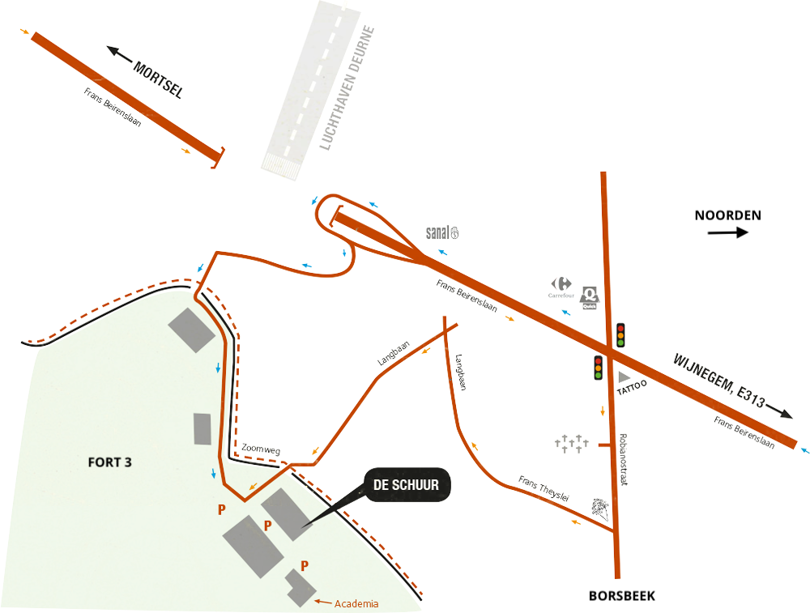

Belgisch Kampioenschap Power Tool Drag Racing
What could possibly go wrong?

WTF, power tool drag racing?
Redneck robot wars
Deelnemers brengen cirkelzagen, schuurmachines en haakse slijpers mee die werden omgebouwd tot heuse racemachines en proberen zo snel mogelijk een houten parcours van 20 meter af te leggen. Spektakel verzekerd!
Tijdens onze tweede editie in 2017 stonden 31 teams met hun bolide aan de start. Zo'n 500 toeschouwers zagen Axel's Green Machine de Belgische kampioenstitel voor 2017 in de wacht slepen.
Comedy man en maker Henk Rijckaert nam voor zijn Koterij YouTube kanaal ook deel en maakte een verslag:
Praktisch
Te land, ter zee en door de plank
Het BK power tool drag racing 2018 zal plaatsvinden op zondag 25 november 2018, de Dag van de Wetenschap. We richten de wedstrijd in afhankelijk van het aantal deelnemers, zodat we voor het donker, tegen 17:00, de finales kunnen houden.
Het kampioenschap vindt plaats in de schuur van Alles Loopt Op Rolletjes. Het adres is Zoomweg 2, Borsbeek, op deze plek op Google maps.

Teams & inschrijving
Wil je je graag inschrijven met je team om mee te doen? Stuur ons dan ASAP een e-mail met de naam van je machine en de namen van je teamleden.
We beperken het aantal deelnemers dit jaar tot 32. Met meer zou het te lang duren of moeten we een tweede baan bouwen, dat is misschien iets voor 2019 ;)
- The Beast (Ken Goossens)
- General Lee (Ken Goossens)
- ??? (Benjamin en Sid Keuleers)
- BAHRtSJOK (Jesse Taeymans)
- LaDa (Daan en Lander Gerits)
- ??? (Area3001)
- In-Ca-1 (Ingmar Jansen)
- Pocket Rocket (Radboud Stam)
- Top-secret (Radboud Stam)
- MOTUL (Stefaan Ponnet)
- Notenschelp X (Steffest)
- AV4.X (Atelier Vilvoorde)
- Kammeniboemskimobiel (Stefan Van Geenhoven)
- X (Hans Haneveir)
- Puber Mania (Bram)
- Roeckoe (Dries De Roeck)
- Nog maar 16 plaatsen over!
- Nog maar 15 plaatsen over!
- Nog maar 14 plaatsen over!
- Nog maar 13 plaatsen over!
- Nog maar 12 plaatsen over!
- Nog maar 11 plaatsen over!
- Nog maar 10 plaatsen over!
- Nog maar 9 plaatsen over!
- Nog maar 8 plaatsen over!
- Nog maar 7 plaatsen over!
- Nog maar 6 plaatsen over!
- Nog maar 5 plaatsen over!
- Nog maar 4 plaatsen over!
- Nog maar 3 plaatsen over!
- Nog maar 2 plaatsen over!
- Nog maar 1 plaats over!
Competitie
Racemachines treden steeds per 2 in competitie met elkaar. De machine die als eerste over de finish rijdt, wint. Als geen van de machines de finish haalt, dan wint de machine die het verste geraakt. Elke machine die op z'n minst probeert deel te nemen verdient een applaus.
We spelen een toernooi met dubbele eliminatie. Dat lijkt op een gewone eliminatiewedstrijd, maar als je een keer verliest krijg je nog een herkansing. Iedereen mag dus minstens 2 keer aantreden in het slagveld!
De beste Belg op het einde van het kampioenschap wordt tot "Belgisch Kampioen" gekroond. Buitenlandse teams zijn zoals vorige jaren zeer welkom om deel te nemen, en kunnen zeker wel de competitie winnen, maar kunnen geen Belgisch Kampioen worden.
De uitslag van het kampioenschap van 2017 staat nog online, en kan je ook hier bekijken:
Tijdschema
Om zeker voor het donker klaar te zijn, rond 17:00, moeten we om 12:00 met de races beginnen en volgen we strak het volgende tijdschema voor de wedstrijden:
Eerste manche (12:00-13:00)
- Ronde 1 (12:00-13:00, wedstrijden 1-16)
De eerste ronde voor alle deelnemers. Verliezers of telaatkomers liggen nog niet uit de wedstrijd - Pauze (13:00-13:15)
De machines en kelen worden voor het eerst geölied
Tweede manche (13:15-14:15)
- Verliezersronde 1 (13:15-13:45, wedstrijden 17-24)
De eerste 8 bolides die hun eerste twee wedstrijden verloren vallen uit - Ronde 2 (13:45-14:15, wedstrijden 25-32)
De winnaars uit de eerste ronde dagen elkaar opnieuw uit - Pauze (14:15-14:30)
Het eerste verdriet wordt weggedronken. "Don't drink & drive" is voor een paar deelnemers nu toch niet meer van toepassing ...
Derde manche (14:30-15:30)
- Verliezersronde 2 (14:30-15:00, wedstrijden 33-40)
Opnieuw worden 8 racers uitgeschakeld uit de verliezersbracket - Verliezersronde 3 (15:00-15:15, wedstrijden 41-44)
De winnaars van de vorige verliezersronde gaan onmiddellijk opnieuw ten strijde tegen elkaar - Ronde 3 (15:15-15:30, wedstrijden 45-48)
Na deze wedstrijden blijven er 4 onstopbare winnaars in de winnaarsbracket - Pauze (15:30-15:45)
Bij de bar wordt alsmaar luider gediscussieerd over grip en tandwielkeuzes
Vierde manche (15:45-16:15)
- Verliezersronde 4 (15:45-16:00, wedstrijden 49-52)
We verkleinen opnieuw de verliezersbracket met 4 ... - Verliezersronde 5 (16:00-16:15, wedstrijden 53-54)
... en nog eens 2 uitschakelingen - Ronde 4 (16:00-16:15, wedstrijden 55-56)
Van vier onstopbare winnaars gaan we naar 2 supersnelle karren - Pauze (16:15-16:30)
De finalisten krijgen een allerlaatste kans om hun machines te optimaliseren
Finales (16:30-17:00)
- Verliezersronde 6 (wedstrijden 57-58)
De strijd om na de verliezersbracket de finales te mogen spelen wordt harder ... - Verliezersronde 7 (wedstrijd 59)
... en harder ... - Halve finale (wedstrijden 60-61)
De 3 sterkste kandidaten blijven nu over, we herleiden deze tot 2 finalisten - Finale (wedstrijd 62 en mogelijk ook 63)
De winnaar van de winnaars en de winnaar van de verliezers spelen tegen elkaar de finale (tot 1 finalist in totaal 2 keer verloren heeft)
Prijsuitreiking (17:00)
We keuren de bolides van de trotse winnaars
Last call (17:30)
Ge moogt naar huis gaan, vaarwel, goodbye, ga maar naar huis, tot in den draai!
Spelregels BK power tool racing
Deze competitie is in eerste plaats voor de fun. En om er uit te leren, want als je een racemachine wil maken zal je toch ook wel goed je hersenpan moeten gebruiken!
Veiligheid
Werken met elektrisch handgereedschap is zeer gevaarlijk. U bent als deelnemer zelf verantwoordelijk voor de veiligheid van uw voertuig, ook tegenover de omstaanders bij de wedstrijd.
Uit veiligheidsoverwegingen kan elk voertuig dat deelneemt op gelijk welk moment tijdens de wedstrijd uitgesloten worden van verdere deelname door de organisatie.
Het is niet toegestaan om tijdens een race aan je voertuig of aan het racetrack te komen. Voertuigen mogen enkel bestuurd worden door de dodemansknop van de organisatie.
Voertuigen
-
Elektrisch handgereedschap
Voertuigen zijn gebaseerd op elektrisch handgereedschap.
Handgereedschap zijn machines die bedoeld zijn om, in de hand gehouden, bediend te worden door 1 persoon. Voorbeelden van machines die handgereedschap zijn, zijn haakse slijpers, boormachines, cirkelzagen, schuurmachines, kettingzagen, boorhamers, graskantmaaiers.
Stationaire machines, machines op wielen of machines die door meer dan 1 persoon bediend worden, zijn geen handgereedschap en mogen niet gebruikt worden in je power tool racer. Grasmaaiers, generatoren of compresseurs zijn bijvoorbeeld geen handgereedschap.
Enkel machines die via 230V kabel met stekker en de voorziene dodemansknop bestuurd kunnen worden zijn toegelaten.
Voertuigen gebaseerd op op afstand bediende autootjes zijn niet toegestaan omdat die saai zijn.
-
Wijzigingen
Je mag 2 handgereedschappen gebruiken maar je wijzigt de voeding en motor niet.
Voertuigen mogen maximaal 2 motors (bvb uit 2 handgereedschappen) bevatten.
Alle motoren in de voertuigen moeten afkomstig zijn uit elektrisch handgereedschap en in hun oorspronkelijke vorm, met originele voeding, rijden.
De motor en voeding van de machines mogen niet worden gewijzigd. De aandrijving kan direct met de originele riemen of bladen, maar mag een aangepaste configuratie van versnellingen, kettingen of wielen zijn. Frames, wielen, geleiderails en versieringen kunnen naar wens worden toegevoegd.
-
Maten
De voertuigen zijn maximaal 30cm breed en 100cm lang.
-
Voeding
De organisatie voorziet 230V op een 10A zekering voor elk voertuig, op een 30m lange verlengkabel. Deelnemers zijn zelf verantwoordelijk voor de organisatie van deze kabel voor de wedstrijd. Het gebruik van haspels of kabelgeleiders is niet toegestaan.
De stroom wordt bediend via een dodemansknop door de deelnemer zelf.
Racetrack
Met nadarafsluitingen voorzien we een safety zone rond het racetrack voor de veiligheid van onze toeschouwers. Tijdens de wedstrijd is per team slechts 1 lid toegelaten binnen de afsluiting om het voertuig met de dodemansknop te bedienen.
De baan is opgebouwd uit modules van spaanplaat en OSB-plaat.
De baan is 30.5cm breed, gebouwd met spaanplaten (die glad zijn omdat ze een melamine laag hebben). Daarin leggen we een ~30cm brede OSB plaat. Alle platen zijn 1.8cm dik. De opstaande rand is 13.2cm hoog (aan de buitenkant gemeten).

We hebben 14 modules in spaanplaat gemaakt, elk 2m64 lang. De totale lengte van de racebaan zal dus 18m48 zijn. We zullen deze met een "fundering" van dikke balken aan elkaar timmeren.
Om te crashen na de finish zetten we opvangbakken voor de racemachines op het einde van de racetracks, zodat de machines veilig kunnen stoppen.
De organisatie probeert de baan zo accuraat mogelijk te bouwen, maar hou rekening met onregelmatigheden en bobbels aan aansluitingen tussen planken. Let op dat je racer daarom ook niet breder mag zijn dan 30cm om in de baan te passen!
Pits
In de pits kan je onderhoud aan je racemachine doen en je bolide tentoonstellen aan het nieuwsgierige publiek.
We voorzien voor elke racer een halve tafel plaats. Hier kan je lustig last minute aanpassingen uitvoeren of reparaties en hacks voor je machine aanbrengen. In vergelijking met 2016 is er deze keer echter geen materiaal ter beschikking en moet je zelf je eigen materiaalkistje meebrengen. Pitspoezen die je aanmoedigen moet je ook zelf ronselen.
Let op de veiligheid van omstaanders bij tests en voorzie een veiligheidsperimeter als je de machine uit wil proberen. Onveiligheid in de pits kan tot onmiddellijke uitsluiting van de wedstrijd leiden.
Concept en realisatie door Anthony Liekens, gesteund door de Open Garage. Gesponsord door IO Lab BVBA, Anthony's mad science consultancy boîte.